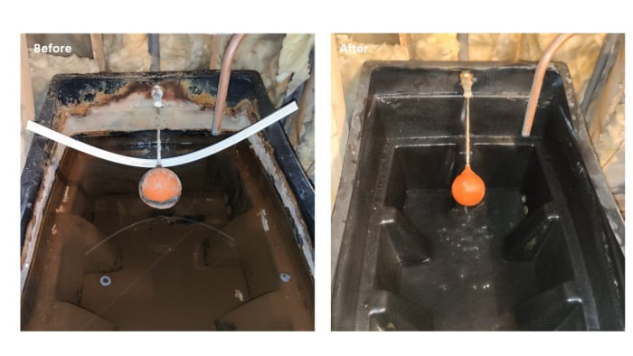

Domestic & commercial attic tank cleaning, disinfection and chlorination for safer household water.
Most Irish homes have an attic cold-water tank that feeds showers, toilets and bathroom taps — and most are never cleaned. Over the years, the inside of the tank builds up sediment, rust, algae, mould and bacteria, all sitting in the water you wash, brush your teeth and cook with.
We drain the tank completely, scrub out the sediment and biofilm, disinfect and chlorinate with food-grade sanitiser, then refill with a final treatment step. It’s the same process recommended for legionella control on commercial premises. A cleaning certificate is issued on completion for your records.

What could be lurking in your water tank
Stagnant water becomes a breeding ground for harmful bacteria and viruses that can affect your health.
Dark, damp conditions in water tanks create ideal environments for mold and algae growth.
Over time, sediment, silt, and rust accumulate at the bottom of your tank, contaminating your water supply.
We follow a thorough cleaning process to ensure your water tank is completely clean and safe:
Recommendation: We recommend getting your water tanks cleaned at least once a year to maintain water quality and hygiene.
Ensure your family is protected from waterborne illnesses and contaminants in your water supply.
Enjoy cleaner, better-tasting water for drinking, cooking, bathing, and everyday use.
For businesses, comply with the Safety, Health and Welfare at Work Act 2005 requirements.
Water tank cleaning for homes and businesses
The questions homeowners and facilities managers ask most
Free, no-obligation quote — we reply same day. Serving Laois, Kildare, Carlow, Kilkenny, Tipperary, Offaly & Westmeath.